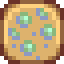

Bonificadores
Los Bonificadores son aumentos o disminuciones temporales en las estadísticas y habilidades del jugador. Se pueden obtener al consumir varias comidas y bebidas, o de monstruos que te ataquen. A continuación, todas las bonificaciones y que las causan:
Combinando bonificadores
En general, los bonificadores no se acumulan, sino que reemplazan los bonificadores anteriores. Más específicamente, los bonificadores de exactamente un alimento y una bebida pueden estar activos en un momento dado.[1] Comer un alimento con bonificadores eliminará los bonificadores de los alimentos consumidos anteriormente (pero no los bonificadores de una bebida anterior); Los bonificadores de una bebida reemplazarán los bonificadores de cualquier bebida anterior, pero no tendrán ningún efecto de los bonificadores de comida existentes. Los alimentos o bebidas que no tienen bonificadores (excepto el Ravioli de tinta de calamar) pero restauran la Salud y Energía teniendo la posibilidad consumir de forma segura sin ningún efecto sobre los bonificadores activos.
Solo dos ventajas, Velocidad y Max Energía, están disponibles tanto en la comida como en la bebida y, por lo tanto, se pueden acumular:
- +1 velocidad del Café o del Café con triple de expreso se puede añadir a el +1 velocidad desde una comida.
- +30 Max Energía del Té verde se puede añadir de +30 a +50 Max Energía desde una comida.
Los bonificadores de efectos especiales y negativos ("debilidades") se manejan individualmente, independientemente de los bonificadores estándar derivados de alimentos y bebidas: solo una instancia de cada uno de estos bonificadores puede estar activa y no se ven afectados por otros tipos de bonificadores. Los bonificadores de efectos especiales son "Subidón de adrenalina", "Aceite de ajo", Energía guerrera", y "Bendición de Yoba"; los bonificadores negativos son "Maldición", "Pringue de baba", y "Un poco alegre".
Por ejemplo, beber una bebida alcohólica hace que el jugador esté "Un poco alegre". Beber otra bebida alcohólica reemplaza el primer efecto "Un poco alegre" por uno nuevo (el efecto sigue siendo -1 velocidad, pero la duración se reinicia). El consumo de cualquier otra bebida o comida (incluidos los que tienen bonificadores) no eliminará el efecto "Un poco alegre" -- en el mejor de los casos, se puede usar un bonificador de +1 velocidad (e.g., Del café) para contrarrestar el -1 velocidad.
Duración de bonificadores
Las duraciones de los bonificadores se especifican en la wiki y en el juego utilizando minutos y segundos en tiempo real.
Normalmente, 42 segundos en tiempo real equivalen a una hora de juego. (7 minutos en tiempo real son 10 horas de juego).
Sin embargo, el tiempo en la Caverna Calavera es más lento: una hora de juego dura 54 segundos en tiempo real. (Excepto en juegos multijugador y en Pisos Prehistóricos, que vuelven a los 42 segundos). Entonces, una taza de Café, que normalmente duraría dos horas, solo durará una hora y media en la Caverna Calavera.
Todos los bonificadores se eliminan cuando duermes.
| Imagen | Nombre | Efecto | Causa | Duración |
|---|---|---|---|---|

|
Maldición | Ser atacado por una bola de fuego del Chamán de las sombras. | ||

|
Pringue de baba | Ser atacado por una baba. | ||
|  | Un poco alegre | Consumir alcohol (Cerveza, Hidromiel, Cerveza pálida o Vino). | ||

|
Subidón de adrenalina | Matar a un enemigo con un Anillo del salvaje | ||

|
Aceite de ajo | Los monstruos débiles te esquivarán. | Consumir un Aceite de ajo. | |
| Energía guerrera | Matar un enemigo usando un Anillo del guerrero. | |||

|
Bendición de Yoba | Invulnerabilidad | Ser atacado por un enemigo mientras usas un Anillo de Yoba. | |
|
|
Velocidad | Altera la |
Consumir varias comidas o café. | Varía |
| Minería | Altera la eficiencia del pico por un monto dependiendo de lo que haya consumido. | Consumir varias comidas. | Varía | |
| Pesca | Altera la eficiencia de la caña de pescar por un monto dependiendo de lo que haya consumido. | Consumir varias comidas. | Varía | |
| Agricultura | Altera la eficiencia de la azada por un monto dependiendo de lo que haya consumido. | Consumir varias comidas. | Varía | |
| Recolección | Altera la eficiencia del hacha por un monto dependiendo de lo que haya consumido. | Consumir varias comidas. | Varía | |

|
Ataque | Altera el |
Consumir varias comidas. | Varía |

|
Defensa | Altera la |
Consumir varias comidas. | Varía |

|
Magnetismo | Altera el Magnetismo por un monto dependiendo de lo que haya consumido. | Consumir varias comidas. | Varía |

|
Energía máx. | Incrementa la |
Consumir varias comidas. | Varía |

|
Suerte | Incrementa la |
Consumir varias comidas. | Varía |
 |
Quemado | Ser atacado por un Chisporroteador de Magma | ||
 |
Oscuridad | Hace que la pantalla se oscurezca casi por completo | Ser atacado por un Francotirador sombrío | |
| Debilidad | Ser golpeado por un orbe de Calamar azul | |||
| Congelamiento | Ser atacado por un Mago esqueleto | |||
 |
Malestar | Evita que el jugador coma o beba nada. | Ser atacado por un Fantasma pútrido | |
 |
Ravioli de tinta de calamar | Eres inmune a las desventajas. | Consumiendo Ravioli de tinta de calamar | |
 |
Mejora de almizcle de monstruo | Tu olor te vuelve irresistible para los monstruos. Encuentra más enemigos. | Usando Almizcle de monstruo |
Referencias
- ↑ BuffsDisplay::tryToAddFoodBuff y BuffsDisplay::tryToAddDrinkBuff
Error
- El efecto de ravioli de tinta de calamar no evita el perjuicio de un poco alegre.
Historial
- En algún momento entre la v1.11 y la v1.3, se eliminó un error que provocó que la duración de las mejoras disminuyera a medida que avanzaba el día.
- 1.5: Se agregaron mejoras de ravioles quemados, oscuros, congelados, con náuseas, debilidad, almizcle monstruo y tinta de calamar. El indicador de mejora ahora parpadea antes de expirar.
- 1.6: Se agregó Garra de basilisco que evita daños o desventajas por monstruos. Joja-Cola y Té verde ahora otorgan mejoras de velocidad. La información en el inventario de alimentos (que otorgan una mejora) ahora muestra la duración de la mejora en la información del elemento. Se corrigió una variedad de errores en los efectos de los bonificadores.
| Habilidades y Estadísticas | |
|---|---|
| Habilidades | Agricultura • Combate • Minería • Pesca • Recolección |
| Estadísticas | Ataque • Daño crítico • Defensa • Golpe crítico • Inmunidad • Magnetismo • Peso • Suerte • Velocidad |